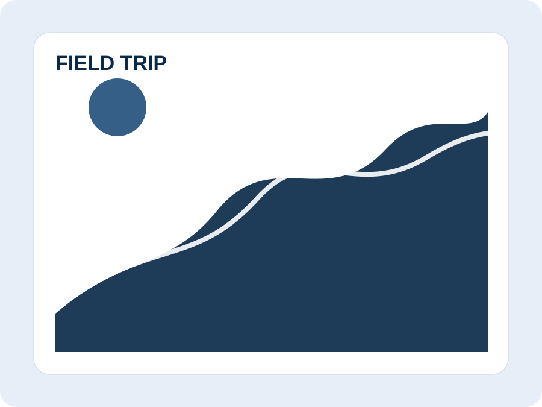
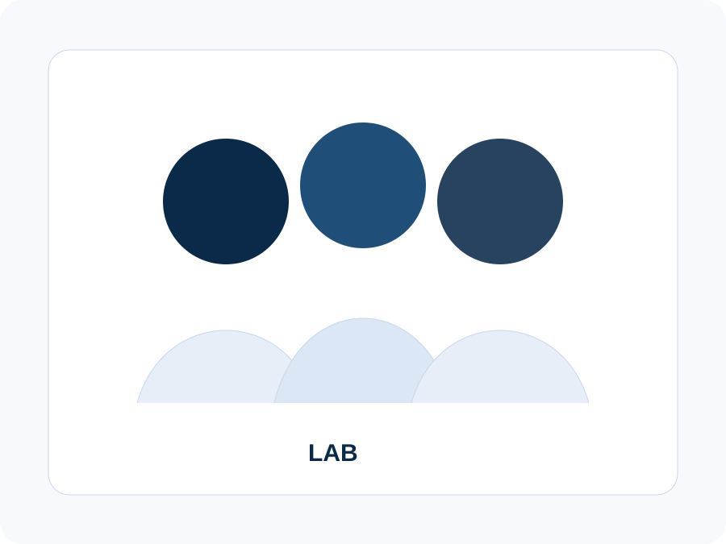
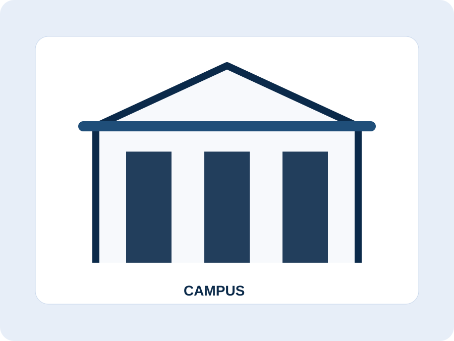
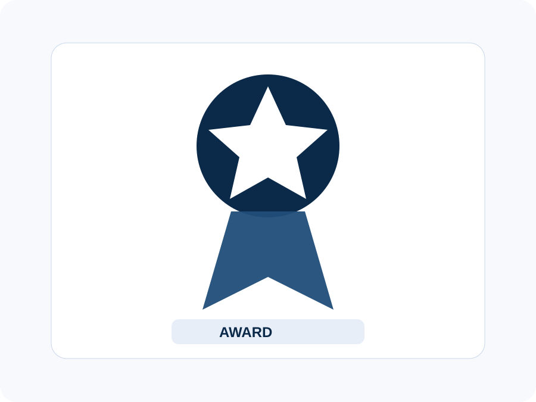

Field trip
Fieldwork and forest observation
野外调查与森林观测
Replace with a field trip or forest research photo.
可以替换成野外实习、森林样地或遥感外业照片。
A small photo archive for field trips, graduations, conferences, lab activities, and other important academic milestones.
这里可以放 field trip、毕业、会议、实验室活动以及其他重要学术阶段的纪念照片。
Replace the SVG placeholders in assets/img/ with your own photos. A 4:3 or 3:2 crop works best for this page.
把 assets/img/ 里的 SVG 占位图替换成你的真实照片即可。建议使用 4:3 或 3:2 裁剪比例。

Replace with a field trip or forest research photo.
可以替换成野外实习、森林样地或遥感外业照片。
Replace with a Wuhan University, Penn State, or Duke milestone photo.
可以替换成武汉大学、Penn State 或 Duke 相关的毕业 / 阶段纪念照。
Replace with an ESA, AGU, symposium, or poster session photo.
可以替换成 ESA、AGU、校内会议或 poster session 照片。

Replace with lab meeting, group, or collaboration photos.
可以替换成组会、课题组、合作项目或研究团队照片。

Replace with a campus, office, or everyday academic life photo.
可以替换成校园、办公室或日常学术生活照片。

Replace with an award, certificate, or recognition moment.
可以替换成获奖、证书或荣誉相关照片。